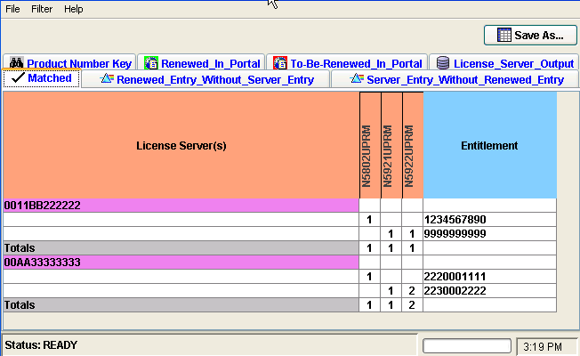

License Renewal Comparison Tool
The License Renewal Comparison tool supports you in the annual license renewal process.
The tool enables you to compare the license inventory of your license servers with the License Renewal Portal's download records. These portal download files (Renewed.csv and To-Be-Renewed.csv) show which licenses have already been renewed, and which licenses still need to be renewed.
You must have visited the License Renewal Portal and your license servers before running the Comparison Tool, so that those inputs to the tool are already available.
The License Comparison tool displays the download records, the license inventory of your license servers, and any mismatching data in a tabular form. Having all this information in one location makes licensing discrepancies easily visible.
